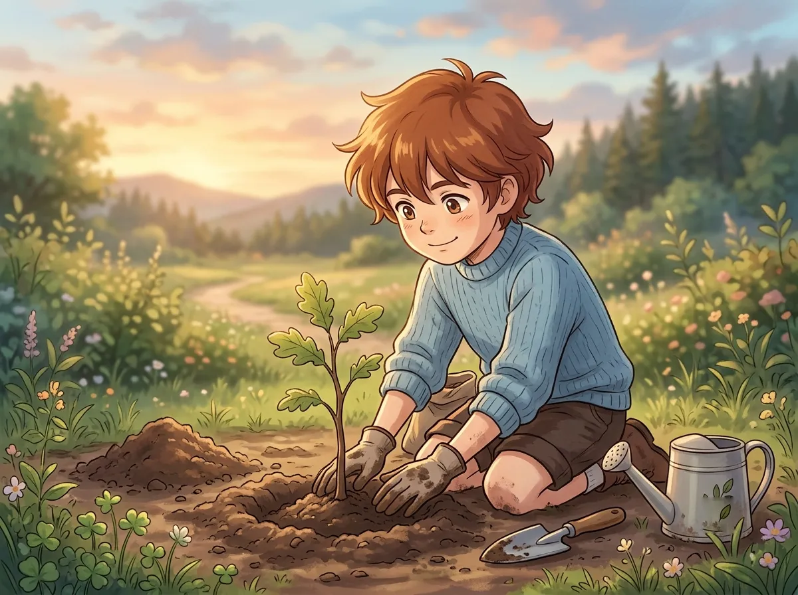
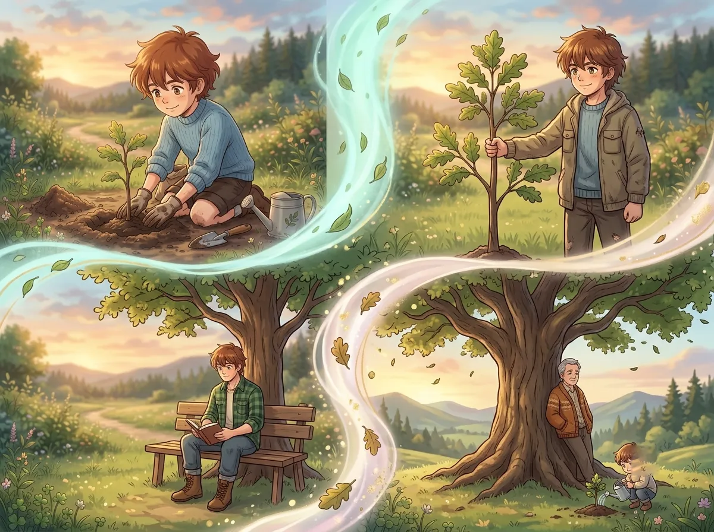
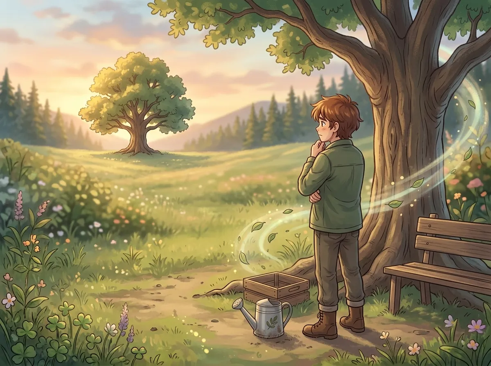
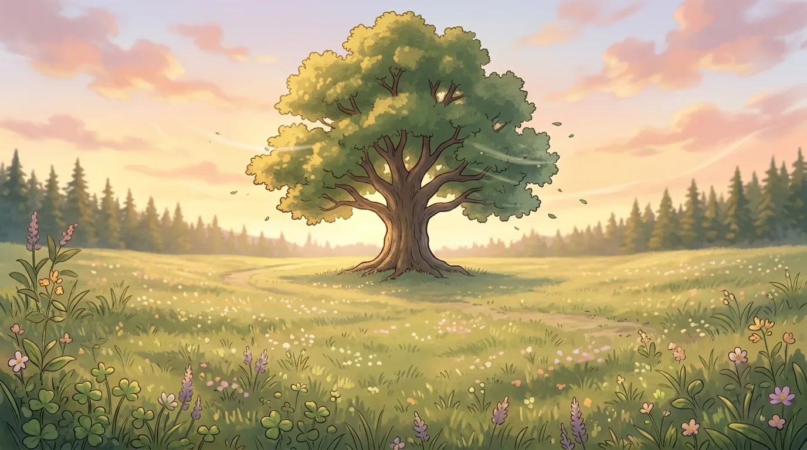
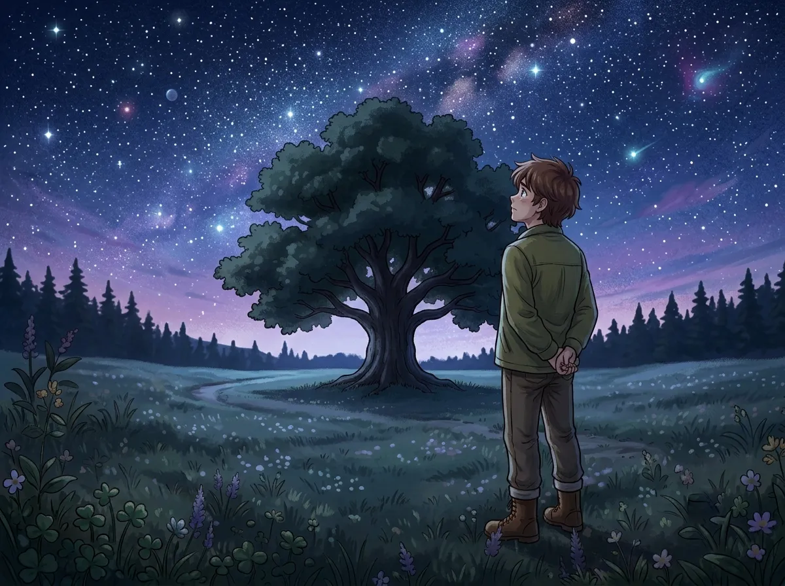

He planted it when he first arrived. He never went back to see it.
He planted a tree two hundred years ago.
He doesn't remember exactly when. He doesn't remember exactly where. He only remembers the act of it. The digging. The placing. The covering. The watering.
He was new to this world. He didn't know if he would stay. He didn't know if he belonged. He planted the tree because he needed to leave something behind. He needed to know that he had been here. He needed to prove that he existed.
He never went back to see it. He never went back to check. He never went back to see if it had grown.
He doesn't know why. He doesn't know if he was afraid. He doesn't know if he was sad. He only knows that he couldn't.
This is the story of that tree.

He had a seed. A small thing. Unremarkable. He didn't know where it came from. He didn't know if it would grow. He didn't know if he would be there to see it.
He planted it anyway. He dug a hole. He placed the seed. He covered it with dirt. He poured water over it. He waited.
He didn't know why he planted it. He didn't know why he needed to leave something behind. He didn't know why he needed to prove that he had been there.
Maybe because he was afraid. Afraid that he would leave and no one would remember. Afraid that he would disappear and the world would not notice. Afraid that he would be forgotten.
He planted the tree so that something would remember him. Something that didn't need to know his name. Something that didn't need to know his story. Something that just needed to grow.
He planted it because he needed to leave something behind. He needed to know that he had been here. He needed to prove that he existed.
He was new to this world. He didn't know if he belonged. He didn't know if he would stay. He planted the tree to anchor himself. To give himself a reason to stay.
He didn't know if it would work. He didn't know if the tree would grow. He only knew that he had to try.

The tree grew. He doesn't know how he knows. He just knows. He can feel it. Somewhere. In the back of his mind. In the corner of his heart. The tree is still there. The tree is still growing.
He never went back to see it. He never went back to check. He never went back to see how tall it had gotten. He never went back to see if it had flowered. He never went back to see if it had shed its leaves.
He doesn't know if he wants to know. He doesn't know if he wants to see it. He doesn't know if he can handle seeing something that he planted two hundred years ago. Something that has lived longer than he has lived anywhere.
The tree is two hundred years old. The tree is older than most things. The tree has seen more than most people. The tree has waited longer than most people have waited.
He doesn't know what to do with that. He doesn't know what to do with a tree that waited for him.
He planted the tree. He left. The tree stayed. The tree grew. The tree lived. The tree waited.
He never went back to see it. He never went back to see how much it had grown. He never went back to see how much it had changed.
He doesn't know if he wants to know. He doesn't know if he can handle knowing. He doesn't know if he can handle seeing something that outlived him.

He thought about going back. Many times. Every year. Every decade. Every century.
He thought about finding the tree. He thought about standing under its branches. He thought about touching its bark. He thought about telling it that he was sorry for leaving.
He never did. He never went back. He never saw the tree again.
He doesn't know why. He doesn't know if he was afraid. He doesn't know if he was sad. He only knows that he couldn't.
Maybe because he was afraid of what he would find. Maybe he was afraid the tree would be dead. Maybe he was afraid the tree would be alive. Maybe he was afraid the tree would look at him and ask why he left.
He doesn't know. He never found out. He never went back.
He thought about going back. He never did. He was afraid. Afraid of what he would find. Afraid of what he would feel. Afraid of what the tree would say.
He was afraid the tree would be dead. He was afraid the tree would be alive. He was afraid the tree would have grown without him. He was afraid the tree would have waited for him.
He didn't know which one was worse. He didn't know which one he could handle. He never found out. He never went back.

The tree might still be there. He doesn't know. He never went back to check.
He thinks about it sometimes. He thinks about the tree. He thinks about the seed he planted. He thinks about the dirt he covered it with. He thinks about the water he poured over it. He thinks about the hope he had that day.
He doesn't know if the tree is still there. He doesn't know if the tree survived. He doesn't know if the tree waited. He doesn't know if the tree forgot.
He hopes the tree is still there. He hopes the tree survived. He hopes the tree waited. He hopes the tree remembered.
He doesn't know. He will never know. He will never go back to find out.
The tree might still be there. He doesn't know. He will never know. He will never go back to find out.
But the possibility is enough. The possibility that something he planted two hundred years ago is still alive. The possibility that something he left behind is still growing. The possibility that something he created is still there.
He doesn't need to know. He doesn't need to see it. He only needs to know that it might still be there. He only needs to know that something he did mattered.

He planted a tree two hundred years ago. He never went back to see it. He never went back to check on it. He never went back to see if it was okay.
But he has been waiting. He has been waiting for two hundred years. He has been waiting for something. He doesn't know what. He doesn't know why. He only knows that he is still waiting.
Maybe he is waiting for the tree. Maybe he is waiting for himself. Maybe he is waiting for the moment when he is ready to go back.
He doesn't know. He will never know. He will never go back. He will never see the tree again.
But the tree is still there. He knows it is. He feels it. Somewhere. In the back of his mind. In the corner of his heart. The tree is still there. The tree is still growing. The tree is still waiting.
He planted a tree two hundred years ago. He never went back to see it. He never went back to check on it. He never went back to see if it was okay.
But the tree waited. The tree stayed. The tree grew. The tree lived. The tree is still there.
He doesn't know how he knows. He just knows. The tree is still there. The tree is still waiting. The tree is still growing.
He will never go back. He will never see it. He will never touch its bark. He will never stand under its branches.
But the tree will always be there. The tree will always be waiting. The tree will always be the thing he left behind.
Xavier planted a tree two hundred years ago. He never went back to see it. He never went back to check on it. He never went back to see if it was okay.
He doesn't know if the tree is still there. He doesn't know if the tree survived. He doesn't know if the tree waited. He doesn't know if the tree remembered.
But he hopes. He hopes the tree is still there. He hopes the tree survived. He hopes the tree waited. He hopes the tree remembered.
He hopes that something he did two hundred years ago still matters. He hopes that something he left behind is still alive. He hopes that something he created is still growing.
He will never go back. He will never know. But he will keep hoping. He will keep waiting. He will keep being the person who planted a tree two hundred years ago and never went back to see it.